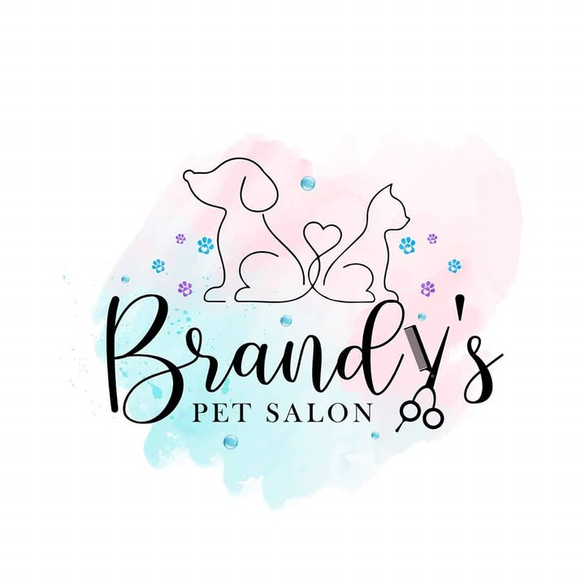

Bath & brush
A fresh, clean coat between full grooms.
Ask about bath & brush →
Brandy's Pet SalonFull-service grooming for cats and dogs in Lincoln, from a simple bath and brush to a vibrant new haircut.
A fresh, clean coat between full grooms.
Ask about bath & brush →Breed cuts and fun, vibrant new looks.
Ask about haircuts & styling →Grooming for cats as well as dogs.
Ask about cats welcome →500 N 66th St, Suite 200, Lincoln, NE 68505
Call nowGet directionsEmail bpsgroomer@gmail.comFacebook page| Mon–Thu | 8 AM–6 PM |
|---|---|
| Friday | 8 AM–4 PM |
| Sat–Sun | Closed |